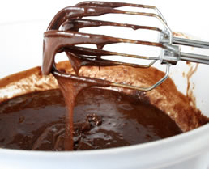

Chocolate Brownies with Chunky Peanut Butter
Ingredients
2/3 cup all purpose flour, plus 2 tablespoons for dusting the pan1/2 teaspoon baking powder
pinch of salt
1/3 cup unsalted butter, at room temperature, plus 1 tablespoons for greasing the pan
2 ounces semi-sweetened chocolate
1 cup sugar
2 medium eggs
1 teaspoon vanilla essence
4 tablespoons chunky peanut butter
Method Preparation
Preheat the oven to 350 F. Into a bowl, sift together the flour, baking powder, and salt. With the help of an elder and using a double boiler, melt butter and chocolate. In a mixing bowl, beat eggs. Add sugar to eggs a little at a time, beating well. Very slowly add the butter- chocolate mixture to it, little at a time. Stir in flour mixture, blending well. Stir in vanilla and peanut butter. With the remaining 2 tablespoons of butter, grease a 8-inch square pan and lightly flour it with reserved flour. Evenly spread the brownie batter in the 8-inch pan. Bake it for about 25 minutes, until the toothpick you insert in the center should come out with a few moist crumbs attached. Cool in pan and cut into squares with a serrated knife with the help of the elder. Enjoy it with your friends, warm or room temperature.